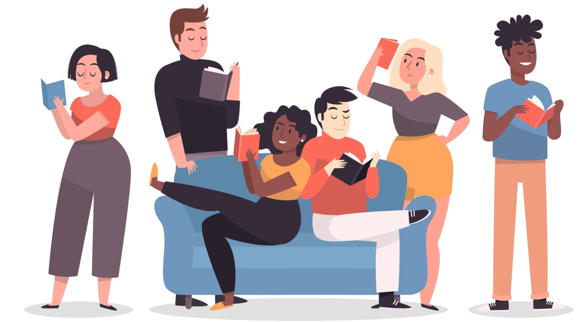

É sabido que a leitura é um exercício deveras vantajoso para o sujeito que a pratica porque além de ser um excelente e saudável entretenimento, estimula a criatividade, exercita o cérebro, melhora a concentração e memorização, amplia o vocabulário, desperta a flexibilidade analítica e desenvolve o encadeamento de ideias e as habilidades de escrita. Ora, para expressar-se bem, o sujeito tem de saber o que deseja dizer e qual gênero textual lhe atende melhor, de modo que a leitura, não somente de textos literários, se faz essencial para si. Nesse sentido, um período mensal ou semanal que receba textos autorais dos alunos do campus e que se proponha a oferecer aos seus colaboradores ferramentas para desenvolver sua escrita e um olhar crítico para o fazer pode representar um aumento expressivo de leitores e, consequentemente, de escritores, de sujeitos críticos, os quais, observadores de sua própria realidade, possibilitam aos seus outros uma perspectiva diferente e, quiçá, mais acurada do ambiente sócio-histórico-cultural no qual estão inseridos.